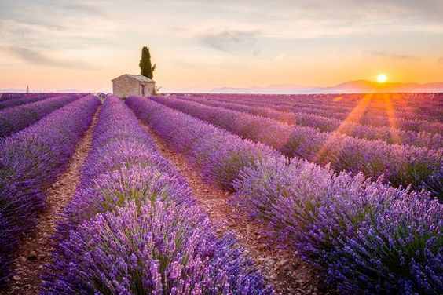
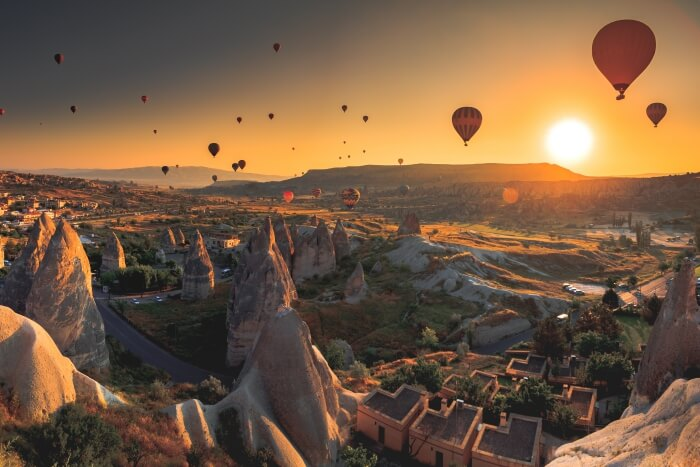
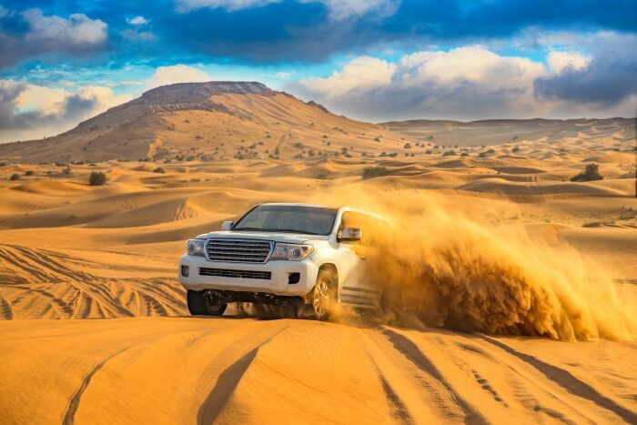

Travel Experiences Around The World
{% for post in posts %}
{% endfor %}
{{ post.title }}
{{ post.text|linebreaksbr }}
Float on a hot-air balloon in Cappadocia, Turkey.
Take in breathtaking sights of natural fairy chimney rock formations (hoodoos), panoramic vistas, and the picture-perfect image of vibrant hot-air balloons—all the while experiencing flying high in the sky—in the semi-arid town of Cappadocia, Turkey. Add this experience to your travel bucket list ASAP.
Go dune bashing in the deserts of Dubai, UAE
Dubai’s dune bashing doesn’t merely mean off roading. You have a cultural extravaganza awaiting you. A night desert safari will get you acquainted with local culture through its food, belly dance performaces and more.
Back to the Menu